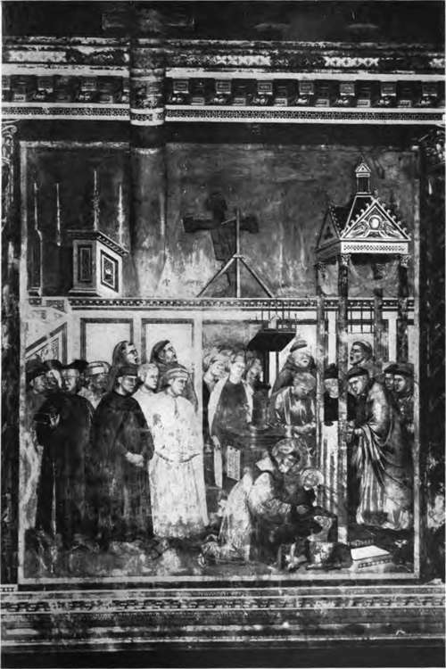

Historical Sketch. Part 6
Description
This section is from the book "Mural Painting", by F. Hamilton Jackson. Also available from Amazon: Mural Painting: -1904.
Historical Sketch. Part 6
The Umbrian school takes its rise in Gubbio, where a celebrated miniature painter named Oderisio, mentioned by Dante, lived at the end of the thirteenth century. Of the Gubbian painters the most celebrated was Ottaviano Nelli, who died in 1444, and painted the chapel in the palace of the Trinci in Foligno about 1424, and other frescoes in his native town. But to most people the Umbrian school means Perugino and Pinturricchio, the former of whom (1446-1524) gains added glory from having been the master of Raffaelle in his boyhood. He was a very accomplished though mannered painter, and works of his in fresco may be seen in the Sistine chapel, where he was painting in 1482 (only one of his frescoes remains, Christ giving the keys to S. Peter, the three which were on the altar wall having been destroyed to make room for Michel Angelo's Last Judgement) in the refectory of the convent of S. Maria Maddalena de' Pazzi in Florence (a very fine Crucifixion in three compartments), and the celebrated frescoes on wall and ceiling in the Sala del Cambio, Perugia (1499). Pinturricchio (1455-1513) may be also seen in the Sistine chapel and in several of the churches at Rome, such as Araceli and S. Maria del Popolo. In 1501 he painted the chapel of the Sacrament in the cathedral at Spello with three excellent frescoes, and also decorated the vault, and in 1505 commenced his most celebrated work, the frescoes in the Picco-lomini library at Siena, finished in tempera, ten subjects from the life of ^3Eneas Sylvius Piccolomini, who became pope as Pius II., which are in the most extraordinary state of preservation and look almost as if painted yesterday. They were finished in 1507.
At Bologna one sees the work of another group of artists of this period—Lorenzo Costa (1460-1535), Aspertini, and others who worked with Francesco Francia (1450-1517). A chapel in S. Giacomo Maggiore belonging to the Bentivbgli family contains some good paintings in tempera on canvas, affixed to the wall, by Lorenzo Costa, and frescoes above by unknown artists; but the more celebrated oratory of S. Cecilia adjacent, erected in 1481, is a little museum of frescoes by Francia, Costa, and their pupils. The extraordinary talent of Andrea Mantegna (1430-1506) is best seen in Padua and Mantua, his most mature works in the Vatican having been destroyed to make room for the Cortile del Belvedere. His frescoes are almost like tempera pictures enlarged, and his passion for the antique sometimes misled him into taking archaeology for art; but his great power is indubitable, as is the influence which he exerted upon many of the painters of the period. The Eremitani church at Padua contains the histories of S. James and S. Christopher, not entirely by his hand, and in the ducal palace at Mantua is the Camera degli Sposi, decorated most delightfully with subjects from the family history of the Gonzagas.
THE INFANT CHRIST AWAKES IN S. FRANC IS* S ARMS AS HE IS CONSTRUCTING A **PRESEPE" FOR THE CHRISTMAS FESTIVAL.
Wall-painting by Oiotto in the Upper Church of S. Francesco, Assisi.
To face page 26.
Vincenzo Foppa of Brescia (1457-1492) occupied in Milan the same position which Mantegna had at Padua and Mantua. Frescoes of his are to be seen in Michelozzo's chapel of S. Peter Martyr in S. Eus-torgio, where the coloured decoration is ascribed to him though unsigned. Borgognone, who was painting between 1486 and 1523, is another distinguished artist of the Lombard school He executed excellent frescoes at the Certosa at Pavia, and there are paintings of his in several of the churches of Milan. Boccaccio Boccacino's beautiful and decorative frescoes in the cathedral at Cremona must not be passed over (about 1500), in which he was assisted by his son Camillo and others. At Naples, in a court of the convent of S. Severino, is a series of twenty frescoes, ascribed to Zingaro (whom the Neapolitans consider to be the father of their school), representing the life of S. Benedict, considered to be the best series in existence except those at Monte Oliveto.
To return to Florence Fra Bartolommeo (1475-1517) painted frescoes in S. Maria Nuova and S. Marco; from 1500 to 1506 he did no painting, having become a monk in consequence of the death of his friend Savonarola, and given up the practice of his art. He was assisted generally by Mariotto Albertinelli, his fellow-pupil under Cosimo Rosselli. Andrea del Sarto (1486-1531), called the faultless painter, was assistant to Piero di Cosimo for some years, but it is Fra Barto-lommeo's influence which is most strongly seen in his frescoes. He is considered the finest colourist of his school in the sixteenth century, but lacked the true fire —his successes are always technical. The frescoes in the Atrium of the Annunziata are all excellent as compositions, but the only one which rises to pure beauty is the Birth of the Virgin. In the Last Supper in the refectory of S. Salvi he almost challenges comparison with Leonardo, however, and in the court of the Scalzo his monochromes of the life of S. John Baptist are of great power.
The work of Michel Angelo (1475-1563) is too well known to need description. It is the culminating point of Renaissance painting, and the super-human ceiling of the Sistine chapel has been the admiration of art lovers for centuries. The Last Judgement in the same chapel was painted between 1534 and 1541, and errs by lack of ideality and gradation of type. With his followers decadence more than begins.
Raffaelle (1483-1520) began painting in the Vatican in 1509, and between that time and 1511 decorated the Camera della Segnatura, which contains the Disputa del Sacramento, the School of Athens, the Parnassus and Canon Law, Prudence, Temperance, and Courage in the lunette, and on the vault, Poetry, the Judgement of Solomon, Marsyas, and the Temptation of Eve. In 1512 be commenced the next room, called the Stanza of Heliodorus from the fresco of the chasing of Heliodorus from the temple. It also contains the Mass of Bolsena, Attila and Leo the Great, and the Deliverance of S. Peter, finished in 1514. The room of the " Incendio del Borgo99 contains very little if anything from Raffaelle's own hand, and Perugino's beautiful circular subjects still remain on the ceiling. In the Sala di Costantino the great fresco was designed and the cartoons made by Raffaelle, as were several of the single figures. Carlo Maratta did a great deal of restoration here. The painting was principally done by Giulio Romano. The loggie were executed by his pupils from his designs. Other frescoes of his or from his designs are in the churches of S. Maria della Pace, and S. Maria del Popolo, and in the Villa Farnesina, where is the beautiful fresco of Galatea and the story of Psyche, the latter painted by Giulio Romano and others from his designs. Giulio Romano (1492-1546) was his most important pupil. He settled in Mantua, where he designed the Palazzo del T& for Duke Frederick Gonzaga, and painted in the ducal palace. In a room of the former are some life-size portraits of horses of a wonderfully modern appearance. The other pupils of Raffaelle are of little importance except Perino del Vaga, who did a good deal of external painting on palaces at Rome and Genoa, and Andrea Sabattini, who painted at Naples and preserved something of Raffaelle's feeling.
Continue to: